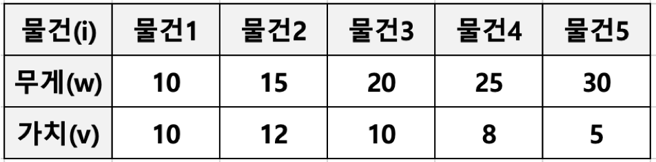

문제1: 동전 문제¶ 지불해야 하는 값이 4720원 일 때 1원 50원 100원, 500원 동전으로 동전의 수가 가장 적게 지불하시오. - 가장 큰 동전부터 최대한 지불해야 하는 값을 채우는 방식으로 구현 가능 - 탐욕 알고리즘으로 매순간 최적이라고 생각되는 경우를 선택하면 됨 문제2: 부분 배낭 문제 (Fractional Knapsack Problem) - 무게 제한이 k인 배낭에 최대 가치를 가지도록 물건을 넣는 문제 - 각 물건은 무게(w)와 가치(v)로 표현될 수 있음 - 물건은 쪼갤 수 있으므로 물건의 일부분이 배낭에 넣어질 수 있음, 그래서 Fractional Knapsack Problem 으로 부름 - Fractional Knapsack Problem 의 반대로 물건을 쪼개서 넣을 수 없는 배낭 문제도 존재함 (0/1 Knapsack Problem 으로 부름)